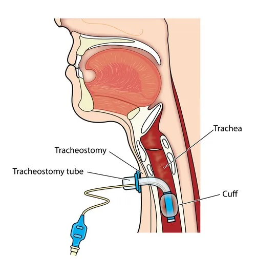
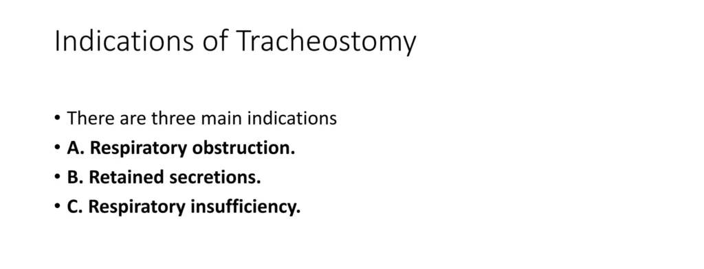
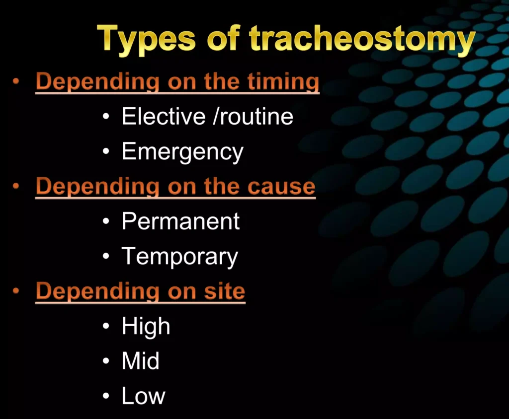
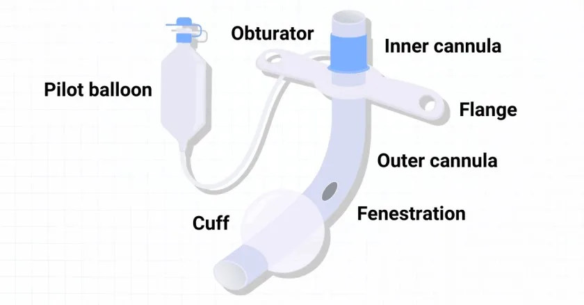
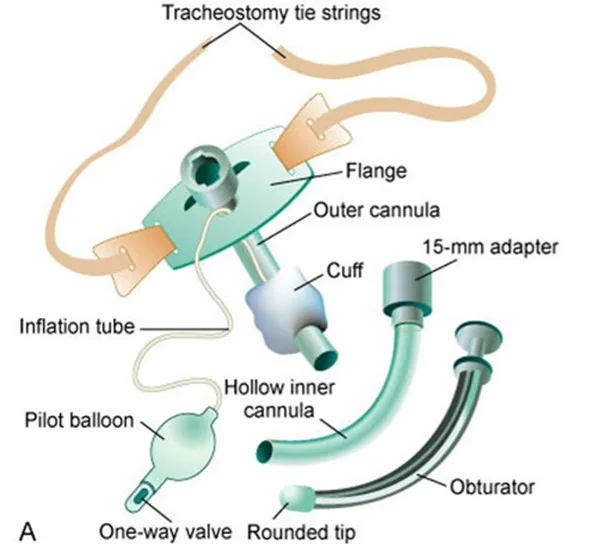
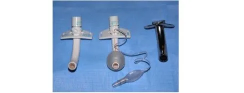
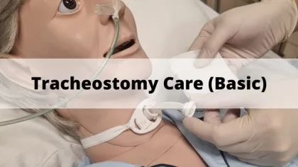
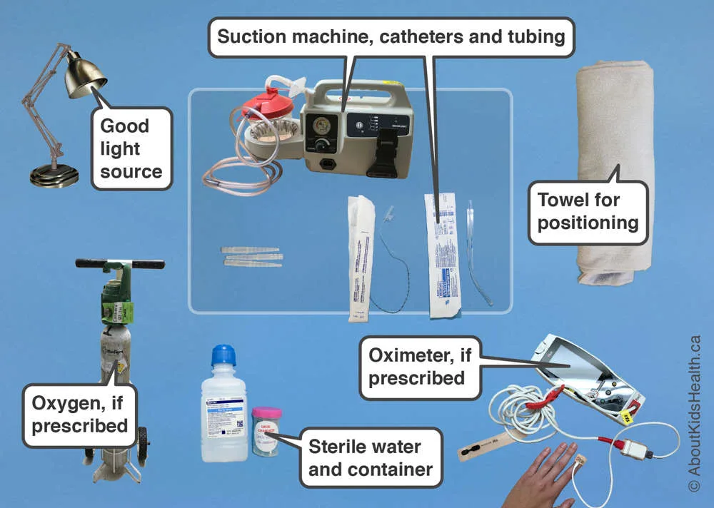

Expanded Nursing Uganda Explanation
Tracheostomy Care should be understood beyond a short definition. Link the concept to patient history, focused assessment, common risks, nursing priorities, documentation and evaluation of outcomes.
Contents — 17 sections (tap to expand)
01 Tracheostomy Care
The tube is inserted through a cut in the neck below the vocal cords( larynx) to allow air to enter the lungs. Breathing is then done through the tube, bypassing the mouth, nose, and throat. A tracheostomy is commonly referred to as a stoma . This is the name for the hole in the neck that the tube passes through.
02 Definition of Terms
- Decannulation : The process whereby a tracheostomy tube is removed once the patient no longer needs it.
- Humidification : The mechanical process of increasing the water vapor content of an inspired gas.
- Stoma : An opening, either natural or surgically created, which connects a portion of the body cavity to the outside environment (in this case, between the trachea and the anterior surface of the neck).
- Tracheostomy : A surgical procedure to create an opening between 2-3 (3-4) tracheal rings into the trachea below the larynx.
- Tracheal Suctioning : A means of clearing thick mucus and secretions from the trachea and lower airway through the application of negative pressure via a suction catheter.
- Tracheostomy tube : A curved hollow tube of rubber or plastic inserted into the tracheostomy stoma (the hole made in the neck and windpipe (Trachea) to relieve airway obstruction, facilitate mechanical ventilation or the removal of tracheal secretions.
- Intubation : The insertion of a tube into a hollow organ, especially the trachea, to establish or maintain an airway.
- Mechanical Ventilation : The use of a machine to assist or control breathing.
- Artificial Airways : A variety of devices, such as endotracheal tubes, tracheostomy tubes, and laryngeal masks, that are used to maintain an open airway.
- Respiratory Therapy: A branch of medicine that focuses on the diagnosis, treatment, and prevention of respiratory diseases.
- Oxygen Therapy : The administration of supplemental oxygen to patients who are not able to obtain adequate oxygen from the air.
- Pulmonary Hygiene : Measures taken to maintain the health of the lungs and airways, such as deep breathing exercises, coughing, and airway clearance techniques.
03 Indications for Tracheostomy:
Airway Obstruction:
- Foreign bodies in the airway : Tracheostomy can be used to remove foreign objects from the airway that cannot be removed by other methods.
- Upper Airway Obstruction : Tracheostomy may be necessary in cases of acute upper airway obstruction caused by a foreign object, soft tissue edema, or more lasting damage to the upper airway.
- Burns of the neck and face : Tracheostomy may be necessary to secure the airway in patients with severe burns to the neck and face.
- Tumors of air passage : Tracheostomy may be performed to relieve airway obstruction caused by tumors in the larynx, trachea, or bronchi.
- Bulbar paralysis-Neurological conditions e.g. recurrent laryngeal nerve: Tracheostomy can be performed in patients with bulbar paralysis (weakness of the muscles of the tongue, palate, and pharynx) to maintain an airway.
- Severe asthmatic attacks : Tracheostomy may be needed in cases of severe asthma attacks where other treatments fail.
- Diphtheria : Tracheostomy can be performed to relieve airway obstruction caused by diphtheria.
- Congenital Anomalies : Tracheostomy may be indicated in cases of congenital anomalies such as laryngeal hypoplasia or vascular web that cause airway obstruction.
- Trauma : Severe neck trauma resulting in injury to the thyroid or cricoid cartilages, hyoid bone, or great vessels may necessitate a tracheostomy to secure the airway. Tracheostomy can be life-saving in cases of trauma to the neck and airway, such as gunshot wounds.
- Subcutaneous Emphysema : Tracheostomy may be performed in cases of subcutaneous emphysema, where air accumulates in the subcutaneous tissues of the neck, leading to compromised airway patency.
- Facial Fractures : Extensive facial fractures, particularly those involving the mid-face and mandible, can cause upper airway obstruction. Tracheostomy may be necessary to ensure adequate breathing.
- Upper Airway Edema: Trauma, burns, infection, or anaphylaxis can cause upper airway edema, leading to airway compromise. Tracheostomy may be performed to secure the airway in such cases.
- Severe Sleep Apnea : In cases of severe sleep apnea that are not amenable to other treatment modalities, tracheostomy may be considered as a last resort to provide a patent airway during sleep.
Ventilation & Airway Management:
- To reduce the dead air space : Tracheostomy can reduce the amount of dead space in the airway, making it easier to breathe.
- To by-pass an upper airway obstruction : Tracheostomy can bypass an obstruction in the upper airway (nose, mouth, pharynx, larynx) by providing an alternate route for air to pass.
- Prolonged Artificial Ventilation : Patients who require prolonged mechanical ventilation are at risk of tissue damage and increased work of breathing due to prolonged endotracheal intubation. Tracheostomy reduces the risk of tissue damage, facilitates communication, and decreases the work of breathing, making it easier to wean the patient off the ventilator.
- Inability to Maintain an Airway Independently: Patients with reduced function in cranial nerves V, VII, IX, X, or XII, damage to the brain stem, or poor consciousness levels may be unable to maintain a patent airway. Tracheostomy provides a secure airway and ensures adequate oxygenation and ventilation.
Secretion Management & Aspiration Prevention:
- To facilitate removal of secretions and to prevent aspiration of secretions, food into the lungs when normal swallowing is impossible because of a reduced state of unconsciousness or muscular paralysis: Tracheostomy can help to remove secretions from the airway and prevent aspiration in patients who are unable to swallow properly.
Other Indications:
- To permit long-term mechanical ventilation in permanent airway obstruction: Tracheostomy can be used to provide long-term mechanical ventilation in patients with permanent airway obstruction.
- To permit oral intake and speech in a patient without aspiration : Tracheostomy allows for oral intake of food and liquids without the risk of aspiration in patients who are unable to swallow normally.
- To provide easier access to the lower airways than possible through the nose or mouth: Tracheostomy provides direct access to the lower airways, allowing for easier suctioning and other airway management procedures.
04 Conditions that may require a tracheostomy include:
- Anaphylaxis : Severe allergic reactions can cause swelling and constriction of the airway, making it difficult to breathe.
- Birth Defects of the Airway : Certain congenital abnormalities can affect the structure or function of the airway, leading to breathing difficulties.
- Burns of the Airway from Inhalation of Corrosive Material: Inhalation of corrosive substances can cause damage to the airway, leading to inflammation, swelling, and scarring.
- Cancer in the Neck : Tumors in the neck region can compress or obstruct the airway, necessitating a tracheostomy to ensure adequate airflow.
- Chronic Lung Disease: Conditions such as chronic obstructive pulmonary disease (COPD) or bronchopulmonary dysplasia (BPD) can result in long-term respiratory insufficiency, requiring prolonged respiratory support.
- Coma : Individuals in a coma may require a tracheostomy to maintain a patent airway and facilitate mechanical ventilation.
- Diaphragm Dysfunction : Weakness or paralysis of the diaphragm can impair breathing, and a tracheostomy may be necessary to assist with ventilation.
- Facial Burns or Surgery : Severe facial burns or surgical procedures involving the face and neck can cause airway swelling or obstruction, necessitating a tracheostomy.
- Infection : Severe infections of the airway, such as epiglottitis or deep neck infections, can compromise breathing and require a tracheostomy for airway management.
- Injury to the Larynx or Laryngectomy: Trauma or surgical removal of the larynx can result in the loss of the natural airway, requiring a tracheostomy for breathing.
- Injury to the Chest Wall : Severe chest wall injuries, such as fractures or trauma, can impair breathing and necessitate a tracheostomy for respiratory support.
- Need for Prolonged Respiratory or Ventilator Support : Some individuals with chronic respiratory conditions or those requiring long-term mechanical ventilation may benefit from a tracheostomy to facilitate respiratory care.
- Obstruction of the Airway by a Foreign Body : In cases where the airway is blocked by a foreign object that cannot be removed by other means, a tracheostomy may be performed to establish a secure airway.
- Obstructive Sleep Apnea : Severe cases of obstructive sleep apnea, where breathing repeatedly stops during sleep, may require a tracheostomy as a treatment option.
- Airway Obstruction : This can be caused by foreign objects lodged in the respiratory tract or congenital abnormalities such as Pierre Robin Sequence.
- Bronchopulmonary Dysplasia (BPD) : A chronic lung condition primarily affecting premature babies, where the underdeveloped lungs require additional respiratory support.
- Chronic Obstructive Pulmonary Disease (COPD) : A group of lung conditions characterized by shortness of breath and difficulties breathing, where tracheostomy may be considered for end-stage COPD patients.
- Haemangioma : A condition where blood vessels collect and form a lump under the skin, leading to airway obstruction in some cases.
- Infection : Certain infections, such as epiglottitis, can cause swelling and inflammation of the epiglottis, potentially obstructing the airways and requiring a tracheostomy.
- Neck and Spine Injuries : Trauma to the neck or spine can result in respiratory trauma or airway obstruction, necessitating a tracheostomy for breathing support.
- Neuromuscular Disorders: Conditions affecting the nervous system that result in progressive muscle weakness, which may require mechanical ventilation and a tracheostomy to protect the airways from aspiration.
- Tracheal Stenosis : Abnormal narrowing of the trachea, which can hinder normal breathing and may require a tracheostomy to alleviate the symptoms.
- Tracheomalacia : A rare condition primarily affecting children, characterized by soft cartilage in the trachea that collapses during respiration. In severe cases, a tracheostomy tube can help reinforce the vulnerable area.
- Tumors : Tumors in the respiratory tract can obstruct the airways, leading to breathing difficulties. The severity and size of the tumor determine whether a tracheostomy is necessary.
05 Patients Who May Benefit from Tracheostomy:
1. Prophylactic Tracheostomy :
- Pre-operative Requirement : Patients undergoing certain surgeries, particularly those involving the chest (thoracic surgery), may benefit from a prophylactic tracheostomy to ensure a secure airway during and after the procedure.
2. Patients with Compromised Respiration :
- Apneic Patients : Patients who have stopped breathing after a cardiac arrest may require a tracheostomy to maintain airway patency and facilitate ventilation.
- Unconscious Patients: Unconscious patients with inadequate ventilation may benefit from a tracheostomy to support their breathing.
- Respiratory Failure : Patients in respiratory failure who require prolonged mechanical ventilation (greater than 1-2 days) may find tracheostomy to be a more comfortable and less invasive method of ventilation.
3. Trauma and Injury :
- Head, Neck, and Chest Injuries: Patients with injuries to the head, neck, or chest, resulting in bleeding, edema, unconsciousness, muscular paralysis, fractured larynx or trachea, flail chest, etc., may require a tracheostomy to maintain a clear airway.
4. Infections and Inflammatory Conditions :
- Fulminating Mouth and Throat Condition s: Patients with severe infections like diphtheria, Ludwig’s angina, or tonsillitis that obstruct the upper airway may benefit from a tracheostomy to ensure adequate breathing.
- Upper Airway Obstruction : Patients with any condition that causes obstruction of the upper airway, regardless of the cause, may require a tracheostomy to establish a secure airway.
5. Secretions and Obstruction :
- Accumulated Secretions : Patients with excessive secretions in the lower tracheobronchial tree, which can cause hypoxia and atelectasis (lung collapse), may benefit from a tracheostomy to facilitate removal of secretions and improve oxygenation.
6. Burns and Trauma :
- Severe Burns : Patients with severe burns of the face, neck, and head, which can lead to airway obstruction due to swelling and scarring, may require a tracheostomy for airway management.
- Thyroidectomy Complications: Patients who have undergone partial thyroidectomy may require a tracheostomy if bleeding occurs in the surrounding neck tissue, causing airway compression.
7. Neurological Disorders :
- Impaired Swallowing : Patients with neurological disorders that impair swallowing, such as head injury, drug overdose, stroke (CVA), or bulbar paralysis, may need a tracheostomy to prevent aspiration (food or liquid entering the lungs).
8. Pulmonary Conditions :
- Severe Pulmonary Edema : Patients with severe pulmonary edema, which reduces gas exchange in the lungs, may require a tracheostomy to facilitate mechanical ventilation and improve oxygenation.
06 Types of Tracheostomy.
Depending on the Timing:
- Elective/Routine Tracheostomy: This is planned in advance, usually for a non-emergency situation. It might be chosen for long-term ventilation needs in patients with chronic conditions like ALS, spinal cord injuries, or certain types of cancer. This allows for preparation and better patient management.
- Emergency Tracheostomy : This is performed urgently to secure the airway in life-threatening situations. Examples include severe airway obstruction due to trauma, infection, or allergic reactions. Speed is crucial in these cases to prevent respiratory failure.
Depending on the Cause:
- Permanent Tracheostomy : This is intended for long-term airway management due to chronic conditions that prevent the patient from breathing independently. Examples include:
- Severe spinal cord injuries
- Muscular dystrophy
- Cerebral palsy
- Certain types of laryngeal cancer
- Severe airway obstruction from birth defects
- Temporary Tracheostomy: This is used for a limited duration to manage temporary issues with breathing. Examples include: Severe airway obstruction due to infection or trauma
- Facilitating mechanical ventilation during recovery from surgery
- Allowing for airway clearance in patients with thick secretions
- Managing post-extubation airway issues
Depending on the Site:
- High Tracheostomy : Performed at the level of the 2nd or 3rd tracheal ring. This is often used when the airway obstruction is higher up, like in the larynx or upper trachea. It might also be chosen for cases needing long-term ventilation.
- Mid Tracheostomy : This is performed at a level between the high and low tracheostomies. While less common than the other two, it might be chosen based on the specific anatomy of the patient’s airway.
- Low Tracheostomy: Performed at the level of the 4th or 5th tracheal ring. This is often used for lower airway obstruction, prolonged ventilation needs, and situations where surgery around the head and neck requires airway bypass.
07 Tracheostomy Tubes
Tracheostomy tubes are essential for patients requiring a long-term airway management. These tubes come in various types and sizes, designed to meet individual needs and anatomical variations.
Types of Tracheostomy Tubes:
- Cuffed : These tubes have an inflatable cuff that seals the trachea, preventing air leaks and aspiration. They are used for mechanically ventilated patients or those at high risk of aspiration. Cuff pressure must be monitored closely to prevent tracheal damage.
- Uncuffed : These tubes lack a cuff, allowing air to flow around the tube. They are suitable for patients who can breathe independently and have a low risk of aspiration. Uncuffed tubes also facilitate speaking and coughing.
- Fenestrated : These tubes have openings on the outer cannula, allowing air to pass through the vocal cords when the inner cannula is removed. They are used for weaning from ventilation or speech therapy.
- Non-fenestrated : These tubes lack these holes, meaning air cannot pass through the vocal cords when the inner cannula is removed. These tubes are typically used for patients who require mechanical ventilation or have a high risk of aspiration.
- Double-Lumen : These tubes have two cannulas: a fixed outer cannula and a removable inner cannula. The inner cannula provides a clear passage for air and secretions, minimizing the risk of tube occlusion.
- Single-Lumen : Single lumen tubes consist of the outer cannula only (there is not an inner cannula). Most pediatric tracheostomy tubes are single lumen tubes, because their diameters are too small to accommodate an inner cannula. However, the entire tracheostomy tube would require to be changed if an obstruction occurred inside the single lumen tube
Components of a Tracheostomy Tube:
- Flange : This flat plate rests on the neck, holding the tube in place. It has holes for securing the tube with ties or straps.
- Obturator : A cone-shaped device inserted into the tube during insertion to guide it and prevent tracheal wall injury. It is removed once the tube is in place.
- Pilot Balloon : A small balloon connected to a valve, used to inflate or deflate the cuff and indicates its status.
- Suction Port: An opening on the tube that allows connection to a suction catheter for removing secretions.
Tracheostomy tube Materials
1. Plastic : Polyvinyl chloride (PVC) and polyurethane are the most common plastics used.
Advantages :
- Cost-effective: Plastic tubes are generally the most affordable option.
- Disposable: Single-patient use, minimizing the risk of cross-contamination.
- Widely available: Easily accessible in institutional settings.
Disadvantages:
- Less flexible: Can be less comfortable for patients, especially those with smaller airways.
- Potential for irritation: Some patients may experience irritation or allergic reactions to plastic.
2. Silicone :
Advantages:
- Soft and flexible: Ideal for pediatric airways and patients with sensitive skin.
- Secretion resistance: Silicone tubes are often manufactured without inner cannulas due to their ability to resist secretions.
- Reusable: Can be sterilized and reused for the same patient.
Disadvantages:
- More expensive: Silicone tubes are generally more costly than plastic tubes.
- Less durable: May be more prone to damage or wear over time.
3. Metal (Jackson Tubes) : Sterling silver or stainless steel.
Advantages:
- Durable: Metal tubes are highly resistant to damage and wear.
- Reusable: Can be sterilized and reused for multiple patients.
Disadvantages:
- Rigid: Can be uncomfortable for patients and may cause irritation.
- Heavy: May be more difficult to manage, especially for patients with smaller airways.
- Limited availability: Less common in acute care settings due to their weight and rigidity.
- Hub incompatibility: Many metal tubes lack the standard 15mm hub, making them incompatible with ventilator circuits and resuscitation equipment.
08 Providing Tracheostomy Care
Purposes/Aims of Providing Tracheostomy Care:
- Maintain Airway Patency : Remove mucus and encrusted secretions to ensure a clear airway. Prevent airway obstruction due to accumulated secretions.
- Prevent Infection : Maintain cleanliness and hygiene around the tracheostomy site. Use sterile techniques during all procedures. Monitor for signs of infection (redness, swelling, discharge).
- Promote Healing : Facilitate wound healing and minimize skin excoriation (irritation) around the tracheostomy incision. Apply appropriate dressings to protect the site.
- Ensure Comfort : Minimize discomfort associated with the tracheostomy tube. Provide proper positioning and support. Address any complaints of pain or irritation.
- Prevent Displacement : Secure the tracheostomy tube to prevent accidental dislodgement. Monitor the tube’s position regularly.
- Facilitate Communication : Provide alternative methods of communication for patients who are unable to speak. Use communication boards, writing tools, or sign language.
- Improve Quality of Life : Enhance the patient’s overall well-being by improving their ability to breathe and communicate. Promote independence and participation in daily activities.
Pre-operative care for tracheostomy
Psychological preparation of the patient and relatives is very important. They must be reassured that the artificial opening will make the breathing much easier and a simple explanation given to them about the instruments that will be seen around the bed after operation. Simple breathing exercise should be encouraged, it’s important to explain to the patient that forcible breathing is not necessary when a tracheostomy tube is in position.
General Post-operative Care:
Postoperative Management – Immediate Care : Immediate post-operative care should be conducted in an intensive care unit equipped with adequate resuscitation tools.
- Positioning : Receive the patient in a warm bed in a recumbent position. Once conscious, place them in a sitting-up position to prevent chest complications. Maintain this position for 48 hours.
- Vital Signs : Monitor temperature, pulse, respiration, and blood pressure. Observe for cyanosis, noisy/moist/labored respirations, and increased pulse rate and respirations.
- Environment : Ensure a warm room with increased oxygen content in the air, or administer humidified oxygen.
- Communication : Provide a pen and paper, and a bell for calling the nurse. Teach the patient to place a finger over the hole of the negus tube if it is not in position.
- Monitoring : The nurse should meticulously monitor the patient for vital signs, signs of hemorrhage, and other complications during the first 24-48 hours.
- Suctioning : Perform continuous suctioning and cleaning of the inner cannula for the first 12-24 hours post-operatively.
Continuous Post-operative Care:
- Humidification : Cover the tracheostomy tube with moist, clean gauze. Change this regularly if it becomes dry or soiled.
- Airway Maintenance : Suction and clean the tube as needed. Prevent aspiration of water solutions through the tracheostomy and keep materials that could obstruct the tube away from the opening (e.g., bedsheets). Cover the opening with moistened gauze to prevent flies and insects from entering.
- Resuscitation Equipment : Keep appropriate resuscitation equipment at the bedside for any accidents or obstructions.
- Obstruction Signs: Assess for signs of obstruction, elevate the head of the bed, and auscultate the chest to determine the need for suctioning.
- Respiratory Difficulty: Observe the patient for signs of respiratory difficulty. Note all signs of obstructed airway and take appropriate action. Check for signs of complications and report them immediately while addressing the problem.
- Tracheostomy Site: Periodically observe the tracheostomy for signs of trauma or infection.
- Asepsis : Practice strict asepsis, especially during suctioning and dressing changes to prevent the introduction of microorganisms into the airway.
- Hydration : Provide adequate hydration (approximately 3 liters of fluid intake per day orally or intravenously) to liquefy secretions and maintain fluid balance. Keep accurate records of fluid intake and output.
- Gentle Suctioning : Be gentle during suctioning as the tracheal mucosa is delicate. Movement of the tube during suctioning can irritate the site and predispose to infection, fistula, etc. Release the cuff frequently as ordered to relieve pressure on the tracheal wall.
- Skin Care: Keep the skin around the tube clean and dry after suctioning. Apply zinc oxide to avoid irritation.
- Dressing Changes: Change dressings as needed in an aseptic manner.
- Alleviating Fear : Reassure the patient on how to manage with the tracheostomy in place and provide comprehensive health education on tracheostomy care.
Tracheostomy Tube Management:
- Tube Changes : The rubber tube is changed by the doctor within 24-48 hours, followed by a silver tube after approximately 5 days.
- Cleaning and Aspiration: Keep the tube clean and perform aspiration as needed. The inner tubing can be easily replaced with a spare if necessary, and the contaminated one should be washed under running water and sterilized.
- Feeding : Feeding can be done via nasogastric tube or intravenously until the patient can resume normal feeding and swallowing reflex is confirmed by giving sterile water. Once the patient no longer chokes on water, feeding can begin. (Thickened fluids are sometimes easier to manage than thin fluids.) IV fluids are recommended for the first 24 hours, followed by oral fluids. Observe the patient for aspiration.
- Hygiene : Frequent mouth washes and personal hygiene should be conducted regularly. Mouth care is essential to prevent the inhalation of septic material.
Post-operative Ambulation:
- Mobility : After 48 hours, the patient may be allowed to sit in an armchair or move around the room.
- Bath Safety : Never allow the patient to take a bath unattended, and ensure the water is shallow.
- Drowning Prevention : If the patient slips, the nurse should immediately pull out the plug to minimize the risk of drowning.
09 Rules for Tracheostomy Management:
- Hand Hygiene : Scrub hands, wear disposable gloves, and a mask.
- Sterile Catheters : Use pre-packaged sterile disposable catheters.
- Aseptic Technique: Do not allow the catheter to touch anything before aspirating the trachea.
- Frequent Suctioning : Perform suctioning as frequently as possible to prevent the accumulation of secretions.
- Catheter Disposal : Discard the catheter after each aspiration.
- Inner Tube Replacemen t: Replace the inner tube as needed. Keep a supply of autoclaved tubes readily available.
- Cleaning and Dressing : Clean the tracheostomy tubes and renew dressings regularly. Keyhole gauze is commonly used.
- Lung Inflation: Always inflate the lungs after each suction session.
Equipment for Tracheostomy Care
- Top Shelf Bottom Shelf Bedside
- Tracheal dilators (various sizes) Sterile gloves Hand washing equipment
- 2 Artery forceps Mouth care tray Oxygen cylinder
- 3 Gallipots Bell Screen
- 2 Receivers Pen and paper Suction machine
- Pair of scissors Sodium bicarbonate Safety box
- Tray with 2 small tracheostomy tubes (one smaller than the other) 2 ml syringe
- Appropriate suction catheter A bottle of Normal saline
- Three receivers Protective gears
- Sterile dressing pack Drum of sterile gauze swabs
General rules
- Introduce yourself and verify the client’s identity using agency protocol.
- Explain the procedure to the client, outlining the steps, purpose, and how they can cooperate. Emphasize communication methods like eye blinking or raising a finger to indicate pain or distress.
- Maintain infection control through hand hygiene and other appropriate measures.
- Ensure client privacy.
- Prepare the client and equipment:
- Assist the client to a semi-Fowler’s or Fowler’s position to promote lung expansion.
- Open the tracheostomy kit or sterile basins and pour the soaking solution and sterile normal saline into separate containers.
- Establish a sterile field.
- Open other sterile supplies as needed, including sterile applicators, suction kit, and tracheostomy dressing.
Tracheostomy Care Steps:
- Suction the tracheostomy tube if necessary, using sterile technique.
- Clean the inner cannula : Remove the inner cannula and clean it with the soaking solution using a sterile brush. Rinse thoroughly with sterile saline.
- Replace the inner cannula : Securely reinsert the cleaned inner cannula.
- Clean the incision site and tube flange : Use sterile saline and applicators to gently cleanse the skin surrounding the tracheostomy.
- Apply a sterile dressing : Secure a clean and dry tracheostomy dressing around the tube and flange.
- Change the tracheostomy ties : If necessary, change the ties to keep the skin clean and dry.
- Tape and pad the tie knot : Place a folded 4-in. x 4-in. gauze square under the tie knot and apply tape over it to prevent skin irritation and confusion with gown ties.
- Check the tightness of the ties : Frequently assess the tightness of the ties and position of the tracheostomy tube. Swelling of the neck can cause tightness, interfering with coughing and circulation. Loose ties can allow the tube to extrude.
- Document all relevant information : Record suctioning, tracheostomy care, and dressing change, including your assessments.
Home Care Modifications:
- Emphasize hand hygiene before performing tracheostomy care.
- Explain the function of each part of the tracheostomy tube.
- Demonstrate how to remove, change, and replace the inner cannula.
- Instruct on cleaning the inner cannula two to three times a day.
- Teach how to check and clean the tracheostomy stoma.
- Explain suctioning technique if necessary.
- Assess for infection symptoms (e.g., fever, increased secretions, change in color or odor of secretions).
- Encourage parental involvement for children to promote comfort and teaching.
- Provide contact information for emergencies.
Suctioning a Tracheostomy Tube:
- Suctioning is done only as needed.
- Maintain sterile technique.
- Be aware of the increased frequency of suctioning during the immediate postoperative period.
Moistening and Filtering the Air
- Steps Action Rationale
- 1 Soak a thin piece of gauze in sterile normal saline and place it across the opening of the tube. To moisten the inhaled air and trap the dust.
- 2 Tape the gauze in position. To secure it and prevent dislodging.
- 3 Document date and time. To aid follow up of the patient.
Cleaning and Dressing of Tracheostomy Tube
- Steps Action Rationale
- 1 Suction the existing tracheostomy tube immediately before removing it out. To prevent mucus to block the airway as the tube is removed.
- 2 Remove the inner existing tube and immerse in half strength hydrogen peroxide. To remove dry mucus secretion and decontaminate the tube.
- 3 Insert the new tube and tie it with tapes on the outer tube in the following way: To secure it.
- – Assistant holds the existing tube while the second nurse cuts and removes the tapes from around the patient’s neck.
- – Assistant removes the existing tube while the second nurse immediately inserts the new tube into the stoma and removes the introducer (if applicable).
- – Check the tension of the ties to allow one finger to fit comfortably between the skin and the tapes, adjust if necessary. Finish the tapes by making a reef double knot and cut off any excess fabric leaving approximately 3 cm.
- 4 Apply a new tracheostomy dressing under the tapes. To absorb the drainage.
- 5 Position and observe the patient’s breathing immediately after changing the tube. To ensure normal breathing.
- 6 Do post tracheostomy suction.
Dressing Tracheostomy
- Steps Action Rationale
- 1 Change the dressings carefully by loosening the soiled dressing from around the tube. To promote infection prevention.
- 2 Clean the area with normal saline and dress with a sterile gauze swab.
- 3 After changing the dressings, check that the tapes of the tubes have not become loose. To secure the tubes.
- 4 Document procedure and time. To aid follow up of the patient.
Final Removal of the Tracheostomy Tubes
- Steps Action Rationale
- 1 Cover the tube with a dressing for increasing periods of time (tracheotomy training) before removal of the tube to see how the patient breathes. It is important to ensure that the patient is able to breathe normally before the tube is removed.
- 2 After removal, apply a dressing over the stoma until it closes. To prevent infection.
- 3 Take the patient’s rate hourly for the first twelve hours. To monitor breathing.
Points to remember
- Change the gauze regularly as needed to prevent drying.
- Ensure that the tubes are tied securely in position by tapes around the patients’ neck.
- The knot is tied at the side of the patient’s neck.
- Deflation of the cuff is only done if ordered by the doctor.
- Ensure that the same amount of air is inserted each time.
- A sterile inner tube must always be used when replacing.
- Tracheotomy sutures are removed on the 7th day following operation, or as ordered by the Doctor.
- Endure that there is a communication system at the bedside e.g. pen and paper, bell.
- Give the patient a fluid diet or soft diet at first until the patient is accustorr-en to the tube then give a normal diet.
- Make sure the patient is carefully observed for any signs of respiratory distress.
10 Suctioning
Suctioning of the tracheostomy tube is necessary to remove mucus, maintain a patent airway, and avoid tracheostomy tube blockages. The frequency of suctioning varies and is based on individual patient assessment.
11 Indications for suctioning.
- Audible or visible signs of secretions in the tube.
- Respiratory distress symptoms.
- Suspected blockage or partial blockage of the tube.
- Inability of the patient to clear secretions through coughing.
- Vomiting.
- Decreased oxygen saturation on pulse oximetry.
- Changes in ventilation pressures (for ventilated patients).
- Patient’s request for suctioning (older children).
12 Procedure Preparation
- Ensure Tracheostomy Kit is present.
- Appropriate size suction catheters (with graduations if available).
- Tape measure with depth required for tracheostomy tube suctioning.
- Setting the suction pressure to the correct range: 80-120mmHg is the recommended suction pressure for tracheostomy tube suctioning, with a maximum pressure of 120mmHg when the tube is occluded. Note that the Medigas suction gauges in use may measure pressure in kPa, with the equivalent of 80-120mmHg being 10-16kPa.
Procedure
- Steps Action Rationale
- 1 Observe the general nursing rules.
- 2 Explain to the patient that the procedure may induce some cough. To gain the patient’s cooperation.
- 3 Pinch the suction tube while entering the tracheostomy. To prevent injury to surrounding tissues and pulling out the tracheostomy tube.
- 4 Insert the suction tube into tracheostomy tube down according to premeasured individual tracheostomy tube. Control the suction tube and gently suck out the mucus for 5-10 seconds. To prevent trauma and induction of cough.
- 5 Then gently withdraw the catheter while maintaining suction until the mucus is completely removed from the tracheostomy tube. To facilitate adequate air passage and ease breathing.
- 6 Clear away the used requirements, thank and leave the patient comfortable. To ensure that the patient is breathing well and resting.
- 7 Document the procedure. To promote continuity of care.
13 Detailed Procedure
- Explain to the patient and their family that you are going to suction the tracheostomy tube.
- Apply eye protection.
- Perform hand hygiene, apply non-sterile gloves.
- Remove the mask or breathing circuit.
- Peel open suction catheter end and attach to suction tubing, check and adjust suction pressure gauge to between 80 – 120 mmHg.
- Utilizing a non-touch technique gently introduce the suction catheter tip into the tracheostomy tube to the pre-measured depth.
- Apply finger to suction catheter hole and; gently rotate the catheter while withdrawing. Each suction should not be any longer than 5-10 seconds.
- Assess the patient’s respiratory rate, skin colour and/or oximetry reading to ensure the patient has not been compromised during the procedure.
- Repeat the suction as indicated by the patient’s individual condition.
- Look at the secretions in the suction tubing – they should normally be clear or white and move easily through the tubing. Document changes from normal color and consistency and notify the treating team if the secretions are abnormal color or consistency.
- Rinse the suction catheter with sterile water decanted into a container (not directly from the bottle).
- Replace suction catheter into the packaging.
- Dispose of waste, remove gloves and perform hand hygiene
Note:
- Suction catheters are to be routinely replaced every 24 hours or at any time if contaminated or blocked by secretions.
- Suction water/and the container to be replaced every 24 hours.
- Routine use of 0.9% sodium chloride is not recommended as there is little clinical evidence to support this. However, in situations where this may be of benefit e.g., thick secretions and/or to stimulate a cough 0.5ml of 0.9% sodium chloride can be instilled into the tracheostomy tube immediately prior to the suction procedure.
Special safety considerations:
- Some patients may require assisted ventilation before and after suctioning. If required, this will be requested by the parent medical team. If the correct size suction catheter does not pass easily into the tracheostomy tube, suspect a blocked or partially blocked tube and prepare for immediate tracheostomy tube change.
14 Nursing Uganda Clinical Lens
Use Tracheostomy Care as a practical nursing topic, not only a memorized definition. Turn the topic into practical nursing knowledge: meaning, assessment, care priorities, teaching and evaluation.
- What to understand first: define tracheostomy care, identify the normal or expected pattern, then explain what changes when the patient is unwell.
- Why it matters in care: the nurse must recognize risk early, explain findings clearly, document accurately and know when to escalate.
- How to revise it: connect each point to assessment, nursing diagnosis or care problem, intervention, rationale and evaluation.
15 Assessment Guide
- Key definitions, patient history, focused observations and risk factors.
- Findings that are normal, abnormal or urgent.
- Resources, referral needs and documentation requirements.
16 Nursing Priorities, Rationales and Outcomes
- Protect safety, comfort, dignity and infection prevention.
- Provide clear care, education and escalation when needed.
- Evaluate response and record what changed.
The rationale for these priorities is patient safety: nursing actions should prevent deterioration, reduce discomfort, support recovery and create clear evidence for the next caregiver.
- Expected outcome: The topic is understood in a way that supports safe nursing judgement and revision.
17 Patient Teaching and Revision Check
- Explain tracheostomy care in simple language the patient or caregiver can repeat back.
- Teach warning signs, medicine or follow-up instructions, hygiene or lifestyle points where relevant.
- For exams, prepare a short answer using: definition, causes or risk factors, signs, assessment, management, complications and prevention.
- For ward practice, document baseline findings, actions taken, patient response and the plan for review.
Illustrations and Diagrams (13)








5 more diagrams available — open the lesson for full illustrations.
Related Video Lectures
Watch nursing lecture videos on YouTube for this topic. Opens in a new tab.
Watch on YouTubeExternal link: YouTube may use its own cookies and terms. Nursing Uganda is not affiliated with YouTube.